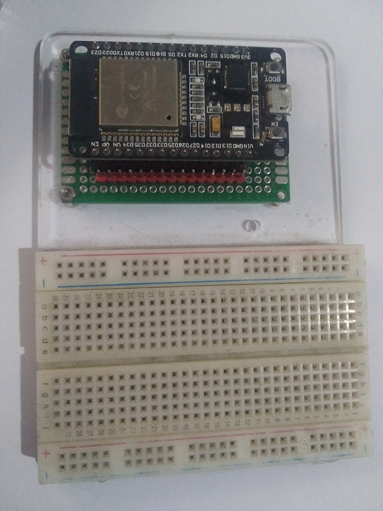

E03 — Microcontroladores I
"El microcontrolador es donde tu programa deja de ser texto y empieza a mover el mundo físico." — el corazón del puente
Este es EL nodo donde software y hardware se tocan. Un microcontrolador (MCU) es una computadora completa en un chip: CPU + memoria + pines. Vos escribís código C (lo de M07) y ese código lee sensores, enciende motores, manda datos por WiFi. Acá converge TODO el campus.
1. ¿Qué es un microcontrolador?
| Tu laptop (M13/M14) | Microcontrolador | |
|---|---|---|
| CPU | GHz, multi-core | MHz, 1-2 cores |
| RAM | 8-32 GB | 2 KB - 512 KB |
| SO | Windows/Linux/macOS | Ninguno o RTOS mínimo |
| Tu código | una app entre muchas | ES todo lo que corre |
| Pines al mundo | USB, HDMI (abstracto) | GPIO directo a voltaje |
| Consumo | 15-100 W | µW - mW (años con batería) |
MCUs populares 2026
- ESP32: WiFi+Bluetooth integrado, barato (~$5), ideal para IoT. Recomendado para empezar.
- Arduino Uno (ATmega328): el clásico educativo, simple, robusto.
- Raspberry Pi Pico (RP2040): barato, potente, dual-core.
- STM32: familia profesional ARM Cortex-M, usado en industria.

2. GPIO: el pin que es un bit físico
- Output: tu código pone el pin en HIGH (3.3V) o LOW (0V) → enciende un LED, activa un relé.
- Input: tu código LEE el voltaje del pin → detecta si un botón está presionado.
digitalWrite(13, HIGH), estás poniendo el bit 1 (M01) como 3.3V real (E00) en un pin físico (E02). Las tres lecciones convergen en una línea de código.
3. Tu primer programa: Blink (el "Hello World" del hardware)
// Arduino / ESP32 — hacer parpadear un LED
void setup() {
pinMode(2, OUTPUT); // pin 2 como salida
}
void loop() {
digitalWrite(2, HIGH); // LED encendido (3.3V)
delay(500); // esperar 500ms
digitalWrite(2, LOW); // LED apagado (0V)
delay(500);
}setup() corre una vez, loop() corre para siempre. Es el game loop que viste en M35 (Game Dev), y el event loop de Node/JS. Mismo patrón "inicializar + loop infinito", otro dominio.
4. Registros: escribir a una dirección ENCIENDE algo
digitalWrite() hay un registro mapeado en memoria (MMIO). Escribir un bit en una dirección de memoria específica cambia el voltaje de un pin físico.// Lo que digitalWrite hace por dentro (ESP32 simplificado):
// Escribir a una dirección de memoria controla el pin físico.
*(volatile uint32_t*) 0x3FF44008 |= (1 << 2); // pin 2 a HIGH
// Comparalo con M07 — esto es un PUNTERO a una dirección fija,
// pero esa dirección NO es RAM: es un registro de hardware.*(uint32_t*)0x3FF44008— son LITERALMENTE un pin del chip. En M07 un puntero apuntaba a RAM; acá apunta a un registro que controla voltaje físico. volatile le dice al compilador "no optimices esto, el hardware puede cambiarlo". El bajo nivel de M07 deja de ser teórico.
5. Leer el mundo analógico: ADC
int valor = analogRead(34); // lee el ADC del pin 34
// valor: 0 (0V) a 4095 (3.3V) en un ADC de 12 bits
float voltaje = valor * 3.3 / 4095.0;6. PWM: simular analógico desde digital
analogWrite(5, 128); // 50% duty cycle → LED a media intensidad
analogWrite(5, 255); // 100% → máximo brillo🔆 Simulador de PWM — analógico desde un pin digital
analogWrite(pin, 0-255).(brillo = promedio)
7. Interrupciones: el scheduler del hardware
volatile bool presionado = false;
void IRAM_ATTR onBoton() { // ISR — se ejecuta al instante
presionado = true;
}
void setup() {
attachInterrupt(0, onBoton, RISING); // dispara cuando el pin sube
}volatile otra vez — y la regla de "ISR cortas" es la misma que "no bloquees el event loop".
8. Comunicación: I2C, SPI, UART
Para hablar con sensores, pantallas y otros chips, hay 3 protocolos físicos estándar:
| Protocolo | Cables | Velocidad | Uso típico |
|---|---|---|---|
| UART | 2 (TX, RX) | Baja-media | Serial, GPS, debug, módulos |
| I2C | 2 (SDA, SCL) | Media | Muchos sensores en 2 cables (bus) |
| SPI | 4 (MOSI, MISO, SCK, CS) | Alta | Pantallas, SD, sensores rápidos |
9. El stack IoT completo (conectando con M37)
Sensor físico (temperatura)
↓ voltaje analógico
ADC del MCU (E03)
↓ número digital
Tu código C en el ESP32 (M07)
↓ WiFi + MQTT (M15, M37)
Broker → Backend (M33 Fullstack)
↓ guarda en
Base de datos (M19 SQL)
↓ consulta
Dashboard React (Curso-React)
↓ entrena
Modelo ML que predice (M39)10. Práctica sin comprar nada
- Wokwi — simula ESP32/Arduino con sensores, corre tu código C real en el browser. Empezá acá.
- Tinkercad Circuits — Arduino virtual + circuito.
- Hardware real para después: un ESP32 (~$5-8) + protoboard + LEDs + sensores básicos (~$20 total).
11. Errores típicos del programador en su primer MCU
volatile en variables compartidas con ISR: el compilador optimiza la variable a un registro y nunca ve el cambio de la interrupción. Bug fantasma clásico.delay(): una interrupción debe ser ultra-corta. Bloquearla cuelga todo. Igual que no bloquear el event loop.delay() para todo: delay(1000) congela el MCU 1 segundo. Para multitarea, usar millis() o un RTOS (E04).String que crecen, buffers grandes — en 2KB de RAM eso desborda y cuelga. La disciplina de M07/M12 es obligatoria.✅ Checkpoint
1. ¿Qué es un microcontrolador y en qué se diferencia de tu laptop?
Una computadora completa en un chip (CPU + RAM + flash + periféricos). Diferencias: MHz en vez de GHz, KB en vez de GB de RAM, sin SO (tu código es todo), pines directos al voltaje físico, consumo µW-mW (años con batería).
2. ¿Qué es GPIO y cómo conecta con M01/E00?
General Purpose Input/Output: pines que tu código pone en HIGH/LOW (output) o lee (input). Es el bit de M01 (1/0), como voltaje de E00 (3.3V/0V), en un pin físico. digitalWrite(13, HIGH) une las tres ideas.
3. ¿Cómo conecta el ADC con la IA/visión?
El ADC convierte un voltaje analógico (sensor) a un número discreto (cuantización/muestreo). Cada píxel de una cámara es un ADC midiendo luz. Los datos que un modelo ML (M39) o de visión (M42) procesa EMPIEZAN en un ADC — es el origen físico del dato.
4. ¿Por qué los punteros de M07 cobran sentido nuevo acá?
Porque un registro de hardware se accede como un puntero a una dirección fija (*(uint32_t*)0x...), pero esa dirección NO es RAM: controla un pin físico. Escribir ahí cambia un voltaje real. volatile evita que el compilador lo optimice.
5. ¿Cómo se relacionan las interrupciones con M14 (SO)?
Una interrupción de hardware pausa el CPU al instante para ejecutar una ISR, igual que el scheduler de M14 interrumpe procesos. Es el preemption a nivel físico — el hardware fuerza el salto. Por eso las ISR deben ser cortas (no bloquear), como no bloquear el event loop.
6. ¿Por qué un proyecto IoT prueba la complementariedad?
Porque su flujo atraviesa ambos mundos: sensor + ADC + MCU (electrónica) → WiFi/MQTT + backend + DB + dashboard + ML (software). Ninguna mitad funciona sola — el dato físico no sirve sin software que lo procese, y el software no tiene dato sin el sensor.